You steer, inspect, and continue the agent turn by turn.
ZTE Secret of Agentic Engineering
TAC-1 removed your hands from typing. TAC-7 asks whether your review still adds value—and shows the isolated, stateful, evidence-gated machinery required before you remove it.
Mastery promise. By the end, you will be able to place work on the in-loop → out-loop → ZTE scale, trace a run through its worktree and state object, explain the model-set and review systems, audit every auto-merge gate from source, run a course-code ZTE experiment, and teach why the SDLC is only one composition of deeper agentic primitives.
First earn the right to remove yourself
“Automatically merge agent work to main” is either the culmination of seven lessons or an irresponsible slogan. The difference is whether you can point to the isolation, persistent state, tests, review evidence, resolution loop, shipping validation, and per-class performance history that make the decision inspectable.
TAC-7 is deliberately shaped unlike a conventional lecture. For roughly the first half, Dan does not announce the tactic. He collects dividends. Five pieces of work enter the agentic layer, take different workflow routes, run in parallel, and return proofs and pull requests while he reviews. Only after that machinery is visible does he name the velocity scale, identify the human review as the new bottleneck, launch a zero-touch chore, and reveal the course’s secret. The teaching order matters: evidence before doctrine.
The committed repository and the on-video run are related but not identical snapshots. The video shows runtime issues #51, #52, #54, #62, a random-data feature, and a CSV-text patch. Those issue numbers and run IDs do not live in the distributed snapshot. The repository instead preserves issues 3, 9, 15, and 47 as five application documents, one specification, agent run artifacts, and a KPI record for ADW cc73faf1. We will use the video values to tell the lesson’s story and the committed values when we walk code. That separation keeps the chapter honest.
What you are training
- CalibrationChoose in-loop, out-loop, or ZTE per problem class and defend the choice with presence and streak evidence.
- TracingFollow one ADW through issue, worktree, ports, state, agent logs, tests, screenshots, documentation, PR, and ship.
- Source auditVerify countable claims in the Python source when the README and the code disagree.
- CompositionSeparate agentic primitives from ADW phases and assemble the workflow shape appropriate to the problem.
The chapter contract
Every major idea uses the same learning cycle: Hook → Picture → Story → Name → Worked example → You try → Fail/fix → Current Practice → Retrieval → Teach-back. Do not skip the “You try” moves merely because this is an advanced chapter. TAC-7’s most dangerous misunderstandings are verbal: a learner can repeat “zero touch” while assuming browser E2E ran, confusing review with tests, trusting stale merge documentation, or turning a per-class target into a global policy.
Prime directive for the chapter and lab
Type zero lines of application code by hand. Record every human touch honestly. Prompt only is presence 1; prompt plus review is 2; continuous steering is in-loop. A higher number is not a moral failure. A dishonest number is.
Payday: five pieces of work, one engineer, no application-code typing
The first lesson is not “go autonomous.” It is that a finished agentic layer converts short issue prompts into concurrent, production-shaped work while the engineer spends attention elsewhere.
1 · Hook — concrete failure
Your queue is serial because you are the transition
Imagine three features, one chore, and one bug arrive before lunch. Even if a coding agent can produce each change, you still open the ticket, restate it, choose a branch, wait, launch tests, inspect the result, ask for repair, and prepare the pull request. Five “AI-assisted” tasks remain serial because every task must pass through your attention between phases. The bottleneck is no longer typing. It is transition management.
Dan’s counterexample is intentionally operational. He writes five GitHub issues in about six minutes. The issues are not ornate specifications. They combine plain-language intent with information-dense routing keywords. A webhook sees each event, classifies it, creates an isolated environment, and starts the chosen workflow. While those runs proceed, Dan turns to review. The system, not the human, carries the transitions.
2 · Picture — one issue becomes a pipeline input
Intent plus two routing signals
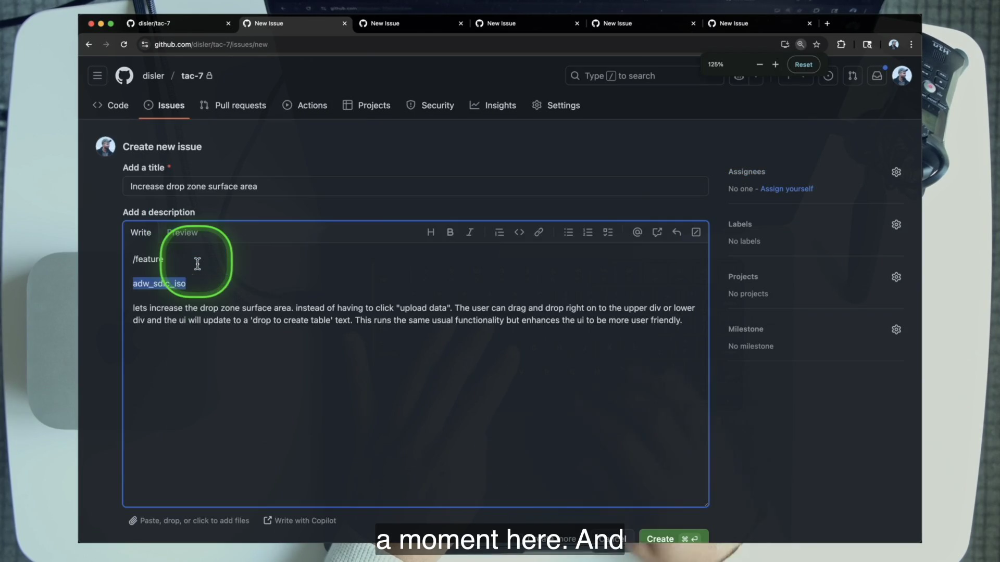
/feature and adw_sdlc_iso classify and route it.Issue
intent + classTrigger
webhook eventEnvironment
tree + portsWorkflow
patch or SDLCEvidence
issue + PR3 · Story of one move — the fan-out begins
The terminal sees five events, not one overloaded agent
The video’s work queue is concrete: issue #51 expands a drop zone; #52 adds JSON export; another feature generates random table data and asks for model_set heavy; #54 changes the NL-to-SQL model to o4-mini; and a CSV-text defect takes a targeted patch path. At 5:22 Dan explicitly chooses the lightweight patch workflow for that narrow bug instead of sending every item through the full SDLC. The secret is already present in miniature: different problem classes receive different compositions.
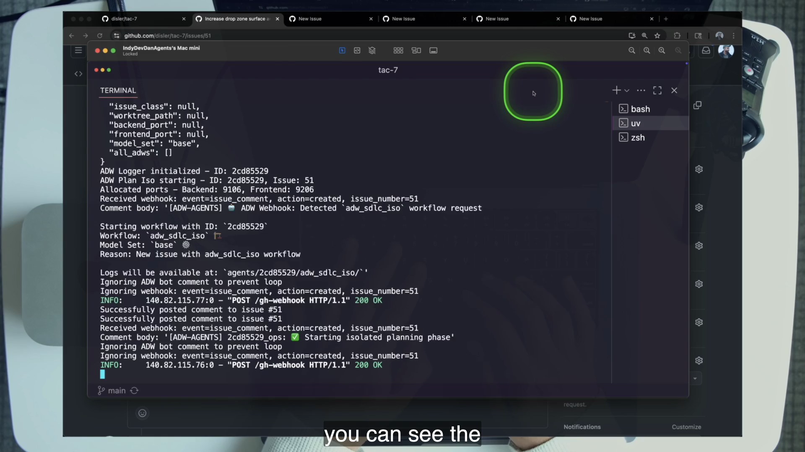
By 7:08, the lesson can call the result “absurd levels of scale” without hand-waving. Five issues are moving at once. That does not mean one context window is juggling five tasks. It means five focused workflows have independent state and environments. Concurrency is a property of the layer.
4 · Name it — Dan term + plain English
Collecting the dividends of the agentic layer
In plain English, there is no new trick in the five-issue demo. TAC-4 supplied PITER and AFK execution. TAC-5 supplied validation and resolution loops. TAC-6 supplied one-agent-one-prompt-one-purpose. TAC-7 composes those capabilities, runs them in parallel, and asks whether the final human review can be removed for a proven class of work.
5 · Worked example — route the five jobs
Workflow choice is already an engineering decision
| Video work item | Problem class | Routing detail | Why it matters |
|---|---|---|---|
| Drop-zone surface | Feature | adw_sdlc_iso | Needs the full evidence-producing chain. |
| JSON export | Feature | adw_sdlc_iso | Runs independently in its own environment. |
| Random table data | Feature | model_set heavy | Allocates more compute selectively. |
| Model bump | Chore | SDLC review loop | Still returns proof and a PR. |
| CSV-text fix | Narrow bug | adw_patch_iso | A different composition, not a miniature SDLC. |
The table prevents a common abstraction leak. “Parallel agents” is not the lesson’s unit. The unit is a routed workflow for a problem class, with one focused agent at each phase and durable evidence between phases.
6 · You try — classify before you automate
Make a five-card routing board
- Write the five video work items on cards.
- For each, choose
patch, reviewedsdlc, or a future ZTE target. - State what evidence the run must return before you would review less.
- Circle which two could safely execute concurrently and name the isolation each needs.
Pass when your choices differ by problem class. If every card receives the same maximum ceremony, you have copied a pipeline rather than learned to compose one.
7 · Common fail + fix
Failure: searching for lesson 7’s new magic component
Symptom: you scan adws/ for a novel multi-agent framework and dismiss the demo when you find ordinary Python orchestration, subprocesses, Git worktrees, and saved JSON.
Fix: identify the composition delta. The machinery is intentionally familiar. The capability comes from putting triggers, isolated environments, persistent state, focused phase agents, validation loops, review evidence, and workflow-specific routing behind one issue-shaped input. The lesson’s new move is scale plus removal of the last human—not a new primitive.
8 · Current practice overlay
Modern platforms can shrink the plumbing
9 · Retrieval check
1. Which of the five work items did not receive the full SDLC?
Reveal answer
The CSV-text bug. It was routed to adw_patch_iso, using a targeted patch plan, implementation, and PR.
2. What is actually new in the TAC-7 demo?
Reveal answer
Not a new primitive: earlier tactics are composed, executed concurrently, and then used to justify removing the final human review for a proven problem class.
3. Why are the on-video issue numbers not lab pass criteria?
Reveal answer
They are runtime values from Dan’s demonstration, not artifacts in the distributed snapshot. Learners create issues in repositories they control and receive different numbers and ADW IDs.
10 · Teach-back prompt
Teach a teammate why five simultaneous coding chats are not equivalent to the five-issue demo. Your explanation must mention routing, isolated environments, focused phases, persistent evidence, and why the patch job should not be forced through the full SDLC.
Pass if the listener could sketch the layer that carries transitions without the engineer.
The Agentic Engineering Velocity Scale is a gradient
The most useful question in the chapter is not “Are you autonomous?” It is “How present are you for this class of work, and what evidence would let you move one step?”
1 · Hook — concrete failure
The false binary produces both fear and recklessness
If agentic work is framed as human-in-the-loop versus fully autonomous, teams are pushed toward two bad choices. One group remains continuously present because anything else sounds unsafe. Another declares autonomy as a global mode and removes review before the system can prove itself. Both miss the intermediate discipline that the course has been building.
Dan rejects the binary directly: it is “in loop moving toward out loop.” The verb matters. You move as repeatable work earns trust. You can also move backward. At 22:59, Dan deliberately uses /in_loop_review to inspect the drag-and-drop branch himself. That is not a contradiction. It is an expert selecting the right position on the scale.
2 · Picture — three levels, one measurable dimension
Presence falls as the layer carries more of the chain
You provide the prompt, then return to review and merge.
You provide the prompt; the gated pipeline ships without another touch.
The numbers 1, 2, and 3 name levels on the course card. Presence is a separate KPI. In-loop presence is continuous rather than a fixed count; out-loop’s best case is two touchpoints; ZTE targets one.
3 · Story of one move — the lesson traverses the scale
One video, three operating modes
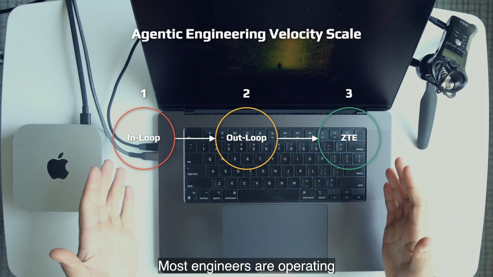
The lesson begins with the familiar interactive claude setup and installation ritual: in-loop work. The five-issue demo is out-loop: Dan writes issue prompts, lets the workflows run, and returns to proof and pull requests. Issue #62 supplies ZTE: one chore prompt enters, all phases run, and main receives the merged change. Between those beats, Dan chooses to step back in-loop for a hands-on browser review.
This sequence is stronger than a definition because it shows that the same engineer can occupy different levels in one hour. The scale belongs to work, risk, evidence, and system maturity—not to personal identity. You are not “a ZTE engineer” in a way that forbids review. You are an engineer who can explain why a specific class is currently at presence one, two, or continuous.
4 · Name it — Dan term + plain English
Agentic Engineering Velocity Scale
Velocity here is not raw generation speed. It is the speed at which valuable work can traverse a trustworthy system without waiting for human transitions. A fast in-loop model may feel responsive while still limiting throughput to one engineer’s attention. A slower out-loop workflow can create more organizational velocity if it carries several jobs and returns evidence asynchronously.
5 · Worked example — score three classes
The same repository can live at three levels
| Problem class | Current level | Presence | Evidence for the next move |
|---|---|---|---|
| Unfamiliar feature | In-loop or out-loop | Continuous or 2 | Stable plan, tests, proof screenshots, no blocker repairs. |
| Known narrow patch | Out-loop | 2 | Repeated correct routing and clean diffs with review adding no findings. |
| Low-stakes styling chore | ZTE target | 1 | Passing pipeline, review proof, positive streak, and reliable ship gates. |
This is an interpretation exercise, not a universal policy. Dan proposes the maturity order chores → bugs → features. The background-color example is a chore precisely because it offers low-hanging fruit on which to test the final step.
6 · You try — make presence visible
Start a four-run presence ledger
Draw four rows for the capstone runs: reviewed SDLC, heavy SDLC, patch, and uppercase ZTE. Before you execute, predict a presence number. Afterward, record the real number and every touch that produced it. If you opened logs or the issue thread only to observe, count according to the chapter’s operational rule: a human decision or intervention is a touch; passive system observation during training is evidence collection, not a hidden production approval.
Then answer: for which class did your manual review change the outcome? The question turns “confidence” into an empirical decision.
7 · Common fail + fix
Failure: turning the scale into a maturity badge
Symptom: you feel embarrassed to move a workflow back in-loop, or you report presence 1 even though you manually checked and approved the merge.
Fix: score the run, not yourself. Movement backward can be the correct response to a new problem class, changed code, weak evidence, or an unexpected failure. Honest presence data is the instrument that eventually lets you remove review. Inflated data destroys the basis for the decision.
8 · Current practice overlay
The scale survives every tool generation
9 · Retrieval check
1. Name the three levels and their presence shape.
Reveal answer
In-loop: continuous presence. Out-loop: best-case presence 2, prompt then review/merge. ZTE: presence 1, prompt only.
2. What did Dan do at 22:59 that disproves a one-way global mode switch?
Reveal answer
He deliberately ran /in_loop_review and inspected a feature himself, moving back in-loop for that work.
3. What class order does Dan recommend for targeting ZTE?
Reveal answer
Chores first, then bugs, then features.
10 · Teach-back prompt
Explain the scale without using “manual” or “autonomous.” Use human touchpoints, problem classes, evidence, and Dan’s deliberate return to in-loop review. End with one condition that would make you move a ZTE-targeted class backward.
Pass if the explanation makes room for reversible, evidence-based movement.
Parallel scale requires isolated, disposable environments
Five workflows cannot safely share one branch, one checkout, one frontend port, and one backend port. TAC-7 makes the environment boundary explicit: one ADW ID owns one worktree, one branch, one state record, and one available port pair.
1 · Hook — concrete failure
Two correct agents can still corrupt each other
Agent A checks out a feature branch while Agent B believes it is testing a bug branch. Both write into the same directory. Both start the frontend on 5173. One resets the database while the other captures review evidence. Each agent may follow its prompt correctly and the combined system still fails. Intelligence does not compensate for a shared mutable environment.
The environment problem becomes unavoidable when fan-out becomes real. A demo with one agent can hide it. Five concurrent workflows cannot. Isolation is therefore not operational polish added after prompting; it is a prerequisite for trustworthy concurrency.
2 · Picture — one tree per run
A complete application behind each eight-character ID
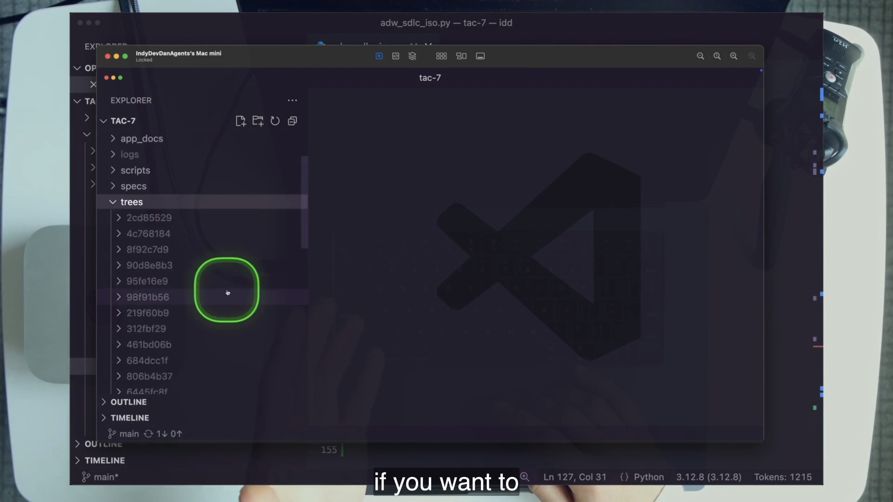
trees/ is a full application checkout for one ADW. It is large by design and disposable by design.ADW ID
8 charsWorktree
trees/<id>Branch
issue/adw scopedPorts
910x / 920xState
agents/<id>3 · Story of one move — build the environment from source
adw_plan_iso.py creates the agent’s world
The plan phase creates trees/<adw_id>/ using git worktree add -b <branch> ... origin/main. Port allocation converts the first eight alphanumeric characters of the ADW ID from base 36, takes modulo 15, and maps the result to backend 9100–9114 and frontend 9200–9214. It socket-checks both ports and walks the 15-slot ring if the deterministic pair is occupied.
The workflow writes .ports.env, then executes /install_worktree inside the new checkout. That prompt copies environment files, appends the ports, copies MCP and Playwright configuration, rewrites paths, syncs Python and Bun dependencies, and resets the database. At 12:58 Dan opens code trees/<id> and visits the agent’s branch as a guest. The isolated environment is not a metaphor; it is inspectable on disk.
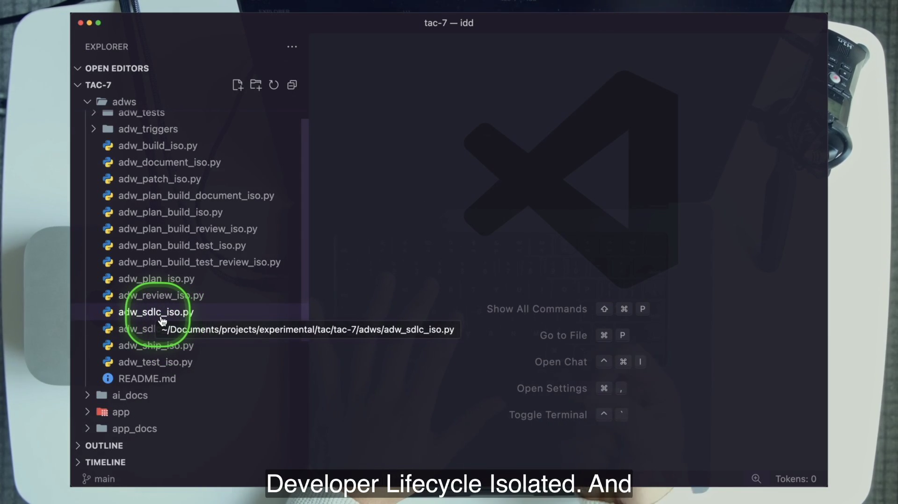
adws/ directory is the scripting layer. The _iso suffix signals workflows that operate in isolated worktrees.4 · Name it — Dan term + plain English
Isolated ADWs
Worktrees are an implementation, not the doctrine. Dan names Docker and E2B as alternatives and says the exact mechanism does not matter; the requirement is the ability to scale agent environments. The transferable contract is stronger than “use worktrees”: environments must be isolated, reproducible enough to install and test, observable during the run, and disposable afterward.
5 · Worked example — calculate and verify a port pair
Hash gives index 7
If an ADW ID maps to index 7, get_ports_for_adw assigns backend 9107 and frontend 9207. The values are written to:
BACKEND_PORT=9107
FRONTEND_PORT=9207
VITE_BACKEND_URL=http://localhost:9107The file is trees/<adw_id>/.ports.env, and the backend/frontend values are also persisted in adw_state.json. If either port is unavailable, find_next_available_ports advances to the next pair, wraps after 14, and raises only after trying all 15 pairs. Determinism gives a predictable first choice; availability checking keeps it honest.
6 · You try — prove two runs cannot collide
Inspect, do not assume
- Launch two independent course-repo chores.
- Capture
git worktree listwhile both run. - Open each
.ports.envand compare branch, path, backend, and frontend. - Open each state file and verify that no path or port pair is shared.
- After the run, purge both with
./scripts/purge_tree.sh <adw_id>.
Pass with four pieces of evidence: distinct worktree, branch, port pair, and state location. “They looked independent in two terminals” is not evidence.
7 · Common fail + fix
Failure: treating worktree creation as cleanup-free
Symptom: every run succeeds, but trees/ quietly accumulates full repository copies and stale Git registrations.
Fix: make purge part of the workflow’s lifecycle, not an occasional housekeeping task. Confirm with git worktree list. The source also contains a latent fallback bug: remove_worktree calls shutil.rmtree without importing shutil. That is a reason to inspect cleanup failures—not a reason to abandon isolation. The three-way validator still checks state, filesystem, and Git registration before dependent phases proceed.
8 · Current practice overlay
First-class isolation changes the amount of code, not the contract
9 · Retrieval check
1. An ADW maps to index 7. What port pair is tried first?
Reveal answer
Backend 9107 and frontend 9207.
2. What three surfaces does validate_worktree compare?
Reveal answer
The state must contain worktree_path, the directory must exist on the filesystem, and git worktree list must know about it.
3. Why is “Git worktrees” an incomplete answer to the isolation lesson?
Reveal answer
Dan treats worktrees as one implementation. Docker or E2B can satisfy the durable requirement: isolated, parallel, observable, disposable agent environments.
10 · Teach-back prompt
Draw the boundary around one running ADW. Explain to an infrastructure engineer what the ID owns, how the first port pair is selected, what happens on collision, how the environment is installed, and how it is removed. Then name one non-worktree implementation with the same contract.
Pass if your boundary prevents branch, process, port, and state collision.
The state object is pipeline memory outside the context window
A fresh review agent should not need the implementation agent’s conversation. It needs a durable record of which issue, branch, plan, worktree, ports, class, and compute policy belong to the run.
1 · Hook — concrete failure
Phase two cannot inherit phase one’s mind
The planner creates a branch and a plan. The implementor begins in a new process with a single-purpose prompt. Where does it learn the branch name and plan path? If the answer is “repeat the whole planner transcript,” you have broken TAC-6’s focus tactic and coupled every phase to an expanding context. If the answer is “the human tells it,” the human has returned as pipeline memory.
A long workflow needs continuity, but continuity does not require one long-lived agent. TAC-7 places continuity in a small JSON state object, allowing each phase agent to remain fresh and narrow. The workflow remembers; the agent focuses.
2 · Picture — ten fields tell the run’s story
A paper trail a fresh agent can load
adw_idIdentity and directory key for the run.
issue_numberThe GitHub request and reporting surface.
branch_nameThe Git branch created for the work.
plan_fileThe specification produced by planning.
issue_classChore, bug, feature, or another routed class.
worktree_pathThe isolated checkout owned by the run.
backend_portThe run’s available backend port.
frontend_portThe run’s available frontend port.
model_setThe base or heavy compute policy.
all_adwsThe workflow phases recorded for KPI attempts.
3 · Story of one move — load, contribute, save
Every phase changes only what it owns
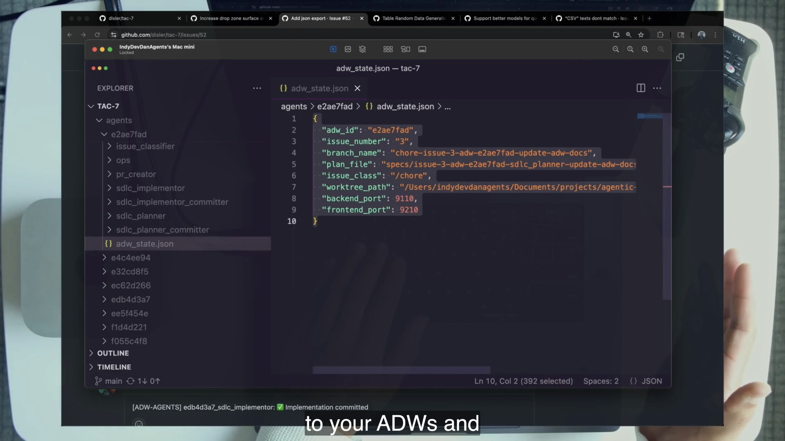
agents/<adw_id>/adw_state.json is pipeline memory and part of the ship gate. It lives outside every phase agent’s context.The course’s ADWState begins with adw_id. Its update method accepts only the ten core fields. Saving constructs a validated ADWStateData object and writes formatted JSON beneath agents/<adw_id>/. Loading reads that file, validates it, and recreates the state container. Each phase therefore follows the same modest protocol: load prior state, add its contribution, save.
Planning establishes the issue, class, branch, plan, worktree, ports, and model set. Later phases load those facts instead of rediscovering or re-prompting them. all_adws accumulates workflow identifiers without duplicates. The documentation/KPI phase can count that list as attempts. The ship phase can ask whether the run has the minimum complete record required to merge.
4 · Name it — Dan term + plain English
ADW state object
In plain English, it is a baton. The planner hands the implementor a plan path, branch, and environment without handing over its whole conversation. The implementor hands later phases a changed worktree without telling them how it reasoned. The baton is small enough to inspect and strict enough to gate.
5 · Worked example — separate total state from ship state
Ten fields exist; eight are merge prerequisites
The state model contains ten fields, but validate_state_completeness in adw_ship_iso.py explicitly requires eight: adw_id, issue_number, branch_name, plan_file, issue_class, worktree_path, backend_port, and frontend_port. model_set and all_adws remain part of the record but are not in that required-field set.
expected_fields = {
"adw_id", "issue_number", "branch_name", "plan_file",
"issue_class", "worktree_path", "backend_port", "frontend_port"
}If a learner runs planning only and then calls ship, the state file may exist while several required values remain null. The ship workflow reports the missing names and exits before any merge command. This is a diagnostic gift: state completeness tells you which upstream transition never completed.
6 · You try — trace ownership field by field
Annotate a real state file
- During the first lab SDLC run, print
agents/<adw_id>/adw_state.json. - Beside every field, write which phase first populated it.
- Mark the eight fields ship requires.
- For
all_adws, count the entries and compare the count with the KPI’s attempts value after documentation. - Explain which facts belong in persistent state and which details should remain in phase logs.
Pass if a fresh reviewer could use your annotated state without receiving the planner’s transcript.
7 · Common fail + fix
Failure: making state a transcript landfill
Symptom: every agent message, intermediate hypothesis, and tool response is copied into a giant state blob so later phases “have context.” The JSON becomes another context window, hard to validate and harder to replay.
Fix: persist coordination facts and externally useful outcomes, not entire reasoning histories. Keep detailed JSONL and logs beneath the run directory. State answers “where and what next?” Logs answer “what happened inside this phase?” This division preserves focus and observability at the same time.
8 · Current practice overlay
State remains explicit even when orchestration becomes native
9 · Retrieval check
1. Name all ten core fields without opening the code.
Reveal answer
adw_id, issue_number, branch_name, plan_file, issue_class, worktree_path, backend_port, frontend_port, model_set, and all_adws.
2. Which two are not in ship’s eight-field completeness set?
Reveal answer
model_set and all_adws.
3. What tactic would a single shared mega-context violate?
Reveal answer
TAC-6’s one-agent, one-prompt, one-purpose focus tactic.
10 · Teach-back prompt
Explain the state object as a baton passed through six runners. Name what planning adds, what later phases read, why all_adws matters to KPIs, and why ship treats missing values as evidence of an incomplete run.
Pass if you preserve both focused agents and a replayable workflow.
Model sets turn compute allocation into one dense keyword
The random-data feature and a text patch should not automatically spend the same compute. TAC-7 encodes a selective base/heavy policy once and lets an issue invoke it with model_set heavy.
1 · Hook — concrete failure
“Use the strongest model everywhere” is not a compute strategy
Classification extracts a few structured fields. Implementation may need to reason across backend, frontend, and tests. Review must compare evidence to a plan. If every phase automatically receives the most expensive model, simple extraction consumes the same class of compute as implementation. If every phase receives the cheapest model, the difficult phase becomes the weak link.
The engineering problem is allocation: decide which cognitive jobs benefit from a heavier model, encode that decision centrally, and make the workflow invoke it without restating 18 choices in every issue.
2 · Picture — one map, eighteen phase decisions
Heavy is selective, not universal
Escalate on heavy · 8
/implement, /resolve_failed_test, /resolve_failed_e2e_test, /document, /chore, /bug, /feature, /patch.
Stay base · 10
Classification, branch naming, tests, review, commit, PR, worktree installation, and KPI tracking remain on the base model in the source map.
3 · Story of one move — issue text becomes policy
From model_set heavy to one phase’s model argument
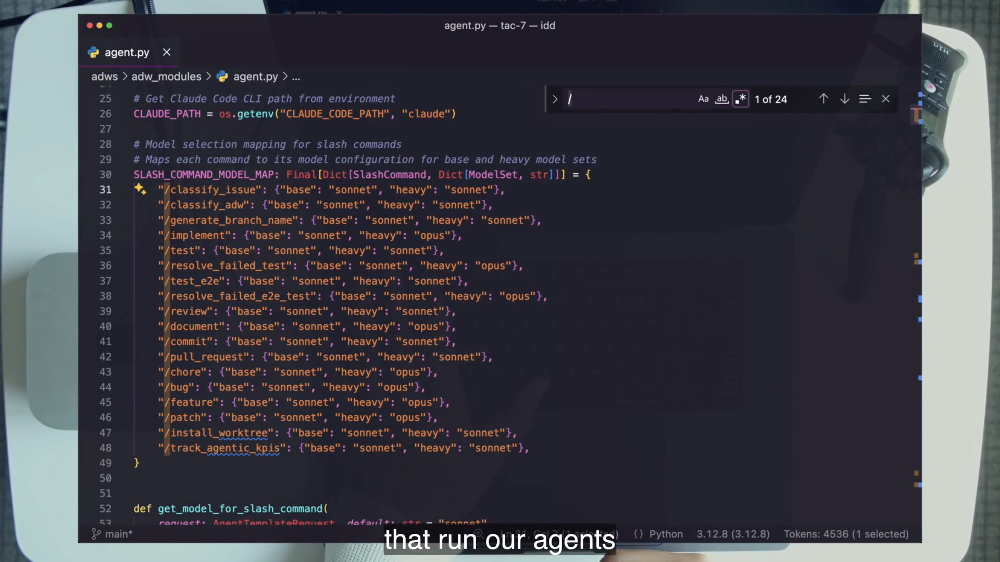
The issue body carries the keyword. /classify_adw recognizes base or heavy, defaults to base when absent, and returns the choice with the workflow route. Planning persists it in adw_state.json. Later, get_model_for_slash_command loads the state, looks up the current slash command in SLASH_COMMAND_MODEL_MAP, and selects the configured value.
In the video, the heavy random-data feature spends 27 minutes on the heavier implementation path and produces roughly 300 lines. Classification and other structural steps do not escalate merely because the feature is heavy. The keyword is information-dense: two words encode a central policy applied consistently across the pipeline.
4 · Name it — Dan term + plain English
Model set and IDK
The keyword works only because the receiving prompts and code recognize it. An unexplained word is not dense; it is ambiguous. The density comes from a committed shared meaning. This is why model allocation belongs in a source-controlled map rather than in the operator’s memory.
5 · Worked example — trace two commands under one set
Heavy implementation, base classification
Suppose the issue includes adw_sdlc_iso model_set heavy. The classifier runs with the model chosen for /classify_adw: in the course map, both base and heavy point to sonnet. State now records "model_set": "heavy". When the implementor creates an AgentTemplateRequest for /implement, the same map returns opus. A later /review request loads the same heavy state but still resolves to sonnet.
/classify_adw heavy → sonnet
/implement heavy → opus
/review heavy → sonnetThe set does not name one model for the run. It names a mapping across jobs.
6 · You try — prove the knob turned
Inspect the run, not the issue label
- File the lab’s heavy random-row issue.
- Confirm
model_setisheavyin state. - Inspect
agents/<adw_id>/sdlc_implementor/raw_output.jsonlor the issue’s “Model Set” evidence. - Record the implementation model.
- Compare it with classification, test, and review evidence.
Pass only when the implementor escalated and at least one structural phase stayed base. A keyword in an issue is an instruction; the log is proof.
7 · Common fail + fix
Failure: making “heavy” a superstition
Symptom: every issue says model_set heavy because failure feels more expensive than tokens, yet no one knows which phases actually benefit.
Fix: treat the map as an engineering hypothesis. Measure which jobs fail, how resolution behaves, and where extra compute changes outcomes. Keep extractive and deterministic transitions on the base path unless evidence says otherwise. The course’s 8-of-18 split demonstrates selectivity; it does not claim those exact values are eternal.
8 · Current practice overlay
Model identifiers expire; policy shape persists
9 · Retrieval check
1. How many commands are in the map, and how many change on heavy?
Reveal answer
Eighteen commands total; eight change from the base to the heavier model.
2. Which phase reads the issue’s keyword, and where is the result stored?
Reveal answer
/classify_adw extracts it; model_set is persisted in adw_state.json.
3. Does heavy mean every phase runs on the heavier model?
Reveal answer
No. It selects the heavy column of a per-command map. Ten of the eighteen commands remain on the base model in this source.
10 · Teach-back prompt
Teach model_set heavy to a finance-minded engineering lead. Explain why it is not “maximum model everywhere,” trace it from issue to state to command lookup, and describe how you would revisit the map when model families change.
Pass if your explanation connects cost, phase difficulty, proof, and central policy.
Review is proof of value, not a second test run
Tests ask whether the system’s executable contracts pass. Review asks whether the thing built is the thing requested—and posts visible proof into the place where the work is judged.
1 · Hook — concrete failure
“The tests passed” does not answer the product question
A drop-zone feature can pass every backend test while rendering the overlay in the wrong region. A button rename can preserve behavior while changing the wrong label. An agent’s “done” summary can be internally consistent and externally false. Tests prove contracts that exist; they do not automatically prove the requested experience.
The review system closes that gap by booting the built application, exercising critical paths, comparing observed behavior with the plan, and returning screenshots plus structured findings. Review earns trust because it produces inspectable evidence, not because a second agent says “looks good.”
2 · Picture — evidence lands in the issue
Four screenshots where the reviewer already works
- boot isolated app
- drive critical path
- capture 1–5 images
- classify findings
- upload or keep local paths
- post to issue
3 · Story of one move — inspect the request in the running app
The review agent enters the worktree as a user
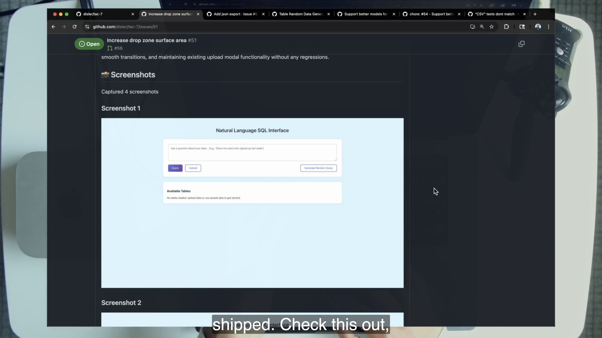
adw_review_iso.py loads state, validates the worktree, starts the application on that run’s ports, and invokes a focused review prompt with Playwright MCP. The reviewer selects critical paths, captures between one and five numbered screenshots, and returns structured results. The images are uploaded to Cloudflare R2 when its four environment variables exist; otherwise local file paths are the expected fallback.
Findings use three severities: skippable, tech_debt, and blocker. Only a blocker makes review unsuccessful. A failing review is not merely announced. The workflow can patch and re-review, as the video’s “attempt 1/3” evidence shows. This is TAC-5’s closed loop operating inside TAC-7’s autonomous path.
4 · Name it — Dan term + plain English
Proof of value
Proof must be easy to consume. If screenshots remain buried inside a worktree no human or downstream gate visits, they do not reduce review friction. Posting them to the issue joins the request, run trace, result, and evidence in one surface. The lesson’s next suggested evolution is video uploaded to a bucket and posted as a URL.
5 · Worked example — grade a finding set
Two debts and one cosmetic note do not block
Suppose the reviewer returns one skippable note about a noncritical animation and two tech_debt items about internal organization, but screenshots prove the requested drop-zone behavior. Under the course contract, review succeeds because there is no blocker. The debts remain useful information; they do not masquerade as release-stopping defects.
Now suppose the overlay covers only half the required region. That contradicts the requested behavior and becomes a blocker. Review returns failure, the resolution loop patches, and review runs again. Severity is therefore part of loop control. If every comment blocks, the pipeline cries wolf. If nothing blocks, evidence cannot protect the ship.
6 · You try — compare two evidence questions
Write a test claim and a review claim
- Choose the lab’s footer feature.
- Write one executable claim a unit or integration test should prove.
- Write one visible product claim a screenshot should prove.
- After the run, point to the exact test output and exact screenshot supporting each claim.
- Classify one hypothetical imperfection at each severity.
Pass if the screenshot claim cannot be replaced by “tests passed,” and the test claim cannot be replaced by a pretty image.
7 · Common fail + fix
Failure: automating evidence nobody reads
Symptom: the workflow dutifully captures screenshots, but the team approves from the green check and never opens them. Presence appears to fall while actual review has disappeared rather than been embedded.
Fix: make evidence part of the decision contract. Define critical paths, keep the set small, require captions or numbered claims, and sample the proof during the trust-building period. ZTE becomes legitimate when the proof system repeatedly agrees with human inspection—not when evidence generation exists as ceremony.
8 · Current practice overlay
From screenshots toward richer review products
9 · Retrieval check
1. What question separates review from testing?
Reveal answer
Testing asks “Does it work against executable contracts?” Review asks “Is what we built what we asked for?”
2. Name the three severity levels. Which blocks?
Reveal answer
skippable, tech_debt, and blocker. Only blocker makes review unsuccessful.
3. Are local screenshot paths evidence of a broken R2 uploader?
Reveal answer
No. Without the four Cloudflare R2 variables, upload disables silently and local paths are the expected fallback.
10 · Teach-back prompt
Convince a test-focused engineer that review is not redundant. Use the drop-zone example, explain severity as control flow, show why proof belongs on the issue, and name the failure mode where screenshot automation becomes empty ceremony.
Pass if you defend both executable checks and product evidence without collapsing one into the other.
When review stops finding defects, the human becomes the bottleneck
The tenth flawless review of the same chore class may not be safety. It may be queueing delay. TAC-7 does not ask you to guess which is true; it gives you attempts, size, presence, and streak as evidence.
1 · Hook — concrete failure
The approval that adds no information
A workflow changes the same class of configuration value every week. The plan is bounded. Tests pass. Review evidence matches the request. The resolution loop has not found a blocker in ten runs. Yet every run waits hours for a human to open the screenshot, nod, and press merge. The approval still feels responsible because it is human. Operationally, it contributes no new information and dominates lead time.
Dan names this moment carefully: the human-in-the-loop review model is a bottleneck for this class of problems. That qualification keeps the realization from becoming a manifesto against review. The question is whether your touch changes outcomes often enough to justify its cost.
2 · Picture — read the committed receipt
One real run preserved in agentic_kpis.md
The snapshot’s row is ADW cc73faf1, issue #47, class /chore, diff 274/5/10 (added/removed/files). Its committed specification carries the trigger text that changes “Upload Data” to “Upload” through adw_sdlc_ZTE_iso. It is repository evidence of presence one, not the video’s issue #62.
3 · Story of one move — convert intuition into a decision
The KPI shape of ZTE
“I’m going to remove the human in the loop review process for this class of problems.”
At 30:45, the lesson turns from machinery to realization. Dan says he is not catching bugs and not adding value outside the layer for a class of work. At 31:56 he describes the desired KPI shape: attempts at one, size scaling upward, streak increasing, and presence dropping to one. These are not vanity metrics. Together they ask whether the workflow succeeds on the first try, handles meaningful scope, stays reliable over time, and requires fewer touches.
app_docs/agentic_kpis.md is updated in the documentation phase. all_adws contributes to attempts, and the KPI prompt forces arithmetic through python -c rather than relying on unaudited mental math. The record is modest, but it changes the conversation from “I trust agents” to “Here is the class, history, size, and presence.”
4 · Name it — Dan term + plain English
Presence and streak
The metrics need each other. Presence one with a streak of one is a successful experiment, not proof of universal readiness. A long streak at presence two may show that review is ready to become a sampled audit. A large diff with low presence may demonstrate scale, or it may indicate review risk; size is context, not a score to maximize.
5 · Worked example — decide whether to drop one review
Compare two histories, not two feelings
Class A · styling chores
Eight clean reviewed runs
Attempts usually one. Screenshots consistently match. No blocker resolution. Human reviews report no added findings. Candidate: one bounded uppercase-ZTE experiment with deterministic gates.
Class B · schema features
Four mixed runs
Two required test resolution. One review found a blocker. Plans vary widely. Candidate: remain out-loop and improve tests/review before reducing presence.
The numbers in this comparison illustrate a reasoning pattern, not claims about the course snapshot. The repository provides only one KPI row. A learner must build their own history during and after the lab.
6 · You try — audit your review’s marginal value
Write a finding, not a feeling
For each capstone run, record the problem class, attempts, plan size, diff size, presence, whether review changed the outcome, and whether a blocker appeared. After four runs, write exactly one sentence: “For class ___, my review did/did not add value because ___.” Do not authorize a production policy from four course runs; use the sentence to identify the next experiment.
Pass when your conclusion could be disproved by the next run. “Agents are good now” and “humans must always review” are beliefs, not testable class-level claims.
7 · Common fail + fix
Failure: cherry-picking the successful streak
Symptom: failed attempts disappear from the ledger, “observation” quietly includes manual corrections, or a different problem class is counted as supporting evidence.
Fix: define the class and presence-counting rule before the run. Preserve failed attempts. Keep video runtime values separate from committed snapshot values. A KPI earns permission only when its inputs are honest and comparable.
8 · Current practice overlay
Move from all-review to sampled or risk-tiered review
9 · Retrieval check
1. Which KPI directly records how touched a run was?
Reveal answer
Presence. ZTE targets a value of one.
2. What are the committed snapshot values for ADW cc73faf1?
Reveal answer
Issue #47, /chore, attempts 1, plan 39 lines, diff 274/5/10, average presence 1.0, current streak 1.
3. Why can’t one clean ZTE row prove all features are ready?
Reveal answer
The evidence belongs to one run and one problem class. Readiness is per class and depends on a history, not a global belief.
10 · Teach-back prompt
Tell a cautious manager when a human review becomes latency rather than safety. Use attempts, size, presence, streak, blocker history, and the phrase “for this class of problems.” Then name one reason to restore review.
Pass if the decision is evidence-gated and reversible.
Tactic #7: Target Zero-Touch Engineering
TAC-1 told you to stop hand-typing. TAC-7 removes the next transition you learned to perform: review. The word “Target” keeps the move disciplined, incremental, and class-specific.
1 · Hook — concrete failure
You replaced coding with a review queue
After six tactics, agents can plan, build, test, repair, review, document, and open a PR while you are away. But every successful run still waits for you. You stopped being the typist and became the approval server. If the system’s evidence is reliable and your repeated approvals add no findings, the final review transition is the next leverage point.
The provocation mirrors TAC-1. “Stop coding” never meant “stop producing or understanding code.” “Stop reviewing” never means “remove evaluation.” It means move evaluation into tests, review agents, proof artifacts, resolution loops, state gates, and shipping controls so the human does not repeat a zero-information approval.
2 · Picture — the tactic card
Presence two becomes presence one
3 · Story of one move — PITER drops a letter
The review step leaves the human framework, not the pipeline
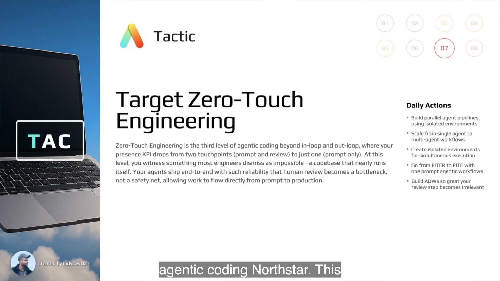
Dan’s reveal moves quickly. At 31:19, out-loop PITER becomes PITE: Prompt input, Trigger, Environment. The human Review drops off the end. At 31:33 he calls the posture “YOLO mode” and “maximum confidence mode.” At 31:50 he names “Target Zero-Touch Engineering” as the ultimate agentic coding North Star. The playful language sits on top of seven lessons of controls.
Dan immediately voices the objection at 32:37: the app is a toy and auto-merging is too far. He agrees about the app, then redirects toward experimentation. Start with chores, move to bugs, then features. You learn where ZTE becomes real by trying on bounded classes, not by asserting a future policy from a slide.
4 · Name it — tactic and code use two expansions
Zero-Touch Engineering / Zero Touch Execution
Target is load-bearing. ZTE is a North Star pursued one class and one day at a time. Without that word, the tactic sounds like “auto-merge everything now,” which the lesson neither demonstrates nor recommends.
5 · Worked example — transform PITER into PITE
What disappears, and what remains?
PITER · out-loop
P
prompt inputI
triggerT/E
isolated environmentR
human review + mergePITE · ZTE target
P
prompt inputI
triggerT/E
isolated environmentEmbedded
tests + review + gates + shipThe “R” removed from the human framework is not replaced by nothing. The software pipeline still reviews, resolves blockers, produces evidence, validates state and environment, and refuses the merge on defined failures.
6 · You try — choose one target class
Write a ZTE readiness contract
For the lab’s background-color chore, write four lines before launch: class boundary, required tests, required visual proof, and abort conditions. Add the presence you expect. After the run, compare the evidence with the contract. Do not broaden the result to other chores, bugs, or features.
Pass when another learner can tell which changes qualify and which superficially similar changes must remain reviewed.
7 · Common fail + fix
Two ways to miss the word “Target”
Global YOLO
Failure: enable auto-merge for every issue because one chore shipped.
Repair: keep class boundaries and require separate evidence histories.
Permanent standstill
Failure: reject every experiment because the demo is a toy.
Repair: choose low-stakes, bounded work and instrument the attempt.
8 · Current practice overlay
Keep the target; strengthen the deterministic perimeter
9 · Retrieval check
1. What does PITER lose, and what does the workflow retain?
Reveal answer
It loses the human R/review touchpoint. The pipeline retains tests, agentic review, blocker resolution, evidence, state validation, and ship gates.
2. Why is “Target” load-bearing?
Reveal answer
It makes ZTE a per-class North Star earned through evidence, not a global day-one mode.
3. What two expansions of ZTE appear in the lesson artifacts?
Reveal answer
Zero-Touch Engineering for the tactic and Zero Touch Execution in code and bot output.
10 · Teach-back prompt
Respond to “Auto-merging agents is insane.” Agree with the risk, then explain “Target,” chores → bugs → features, PITER → PITE, embedded evaluation, and the one-class experiment you would permit first.
Pass if your answer is neither reckless nor immobilized.
Read the ZTE source and count the ways it refuses to merge
adw_sdlc_zte_iso.py is not an incantation. It is a six-phase orchestrator with explicit abort behavior, followed by a ship workflow that validates state and environment before touching Git.
1 · Hook — concrete failure
Fear stays vague until you enumerate control flow
“The agent can merge to main” sounds like unlimited authority. That sentence hides every precondition and failure path. The responsible response is not reassurance; it is source inspection. Which phases can stop the run? Which failure continues? What must exist before Git runs? Which merge strategy is actually used? Does browser E2E run? What restores repository state on failure?
TAC-7 rewards countable answers. The source is short enough to audit, and the audit surfaces two facts the README alone would mislead you about.
2 · Picture — the pipeline announces its authority
Six phases and an explicit warning
/classify_adw downgrades lowercase zte to reviewed SDLC.
Failure posts “ZTE Aborted” and exits.
Failure posts “ZTE Aborted” and exits.
Missing values are named; ship exits before merge.
State, filesystem, and Git registration must agree.
Fetch, checkout, pull, --no-ff merge, and push are checked.
3 · Story of one move — follow the happy and unhappy paths
Plan → build → test → review → document → ship
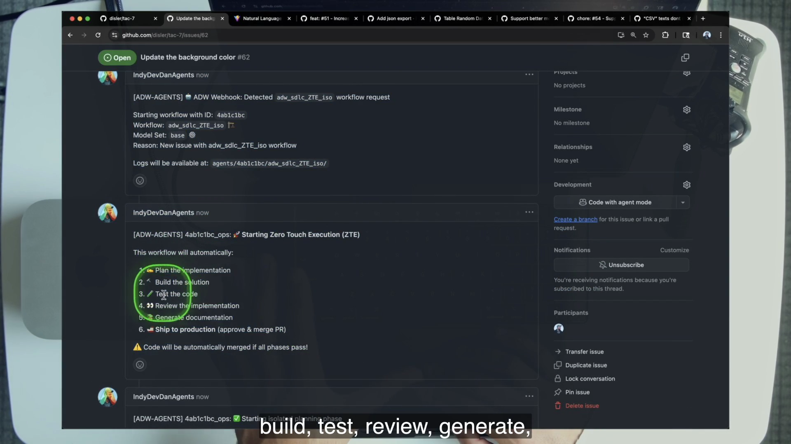
The ZTE orchestrator ensures an ADW ID, posts the six-phase warning, and launches each isolated script in order. Plan or build failure exits. Test always receives --skip-e2e; a nonzero result posts a cancellation comment and exits. Review failure does the same. Documentation is different: failure prints a warning and continues because the source explicitly says documentation should not block shipping. Ship failure posts manual-merge advice and exits.
Inside adw_ship_iso.py, the workflow requires both issue number and ADW ID, loads state, appends its workflow name, checks environment variables, and posts status. It validates the eight fields, then the worktree. Only then does manual_merge_to_main run in the repository root: save the current branch, fetch origin, checkout main, pull main, merge the feature branch with --no-ff and a “via ADW Ship workflow” message, push, and restore the original branch. Failure paths attempt restoration.
4 · Name it — source vocabulary
Zero Touch Execution and the final approval step
“Manual” in manual_merge_to_main means direct Git commands rather than a GitHub PR merge API. It does not mean a person types them during ZTE. The distinction matters when the README says “approves the PR + squash”: the shipping source neither approves through the API nor squashes.
5 · Worked example — reconcile three surprising facts
Docs drift, E2E omission, and the uppercase interlock
| Claim you might repeat | What source proves | Operational consequence |
|---|---|---|
| “Ship squash-merges the PR.” | git merge <branch> --no-ff -m ..., then push. | git log should show a merge commit. |
| “Full SDLC includes browser E2E.” | Both SDLC orchestrators hardcode --skip-e2e. | Run adw_test_iso.py standalone without the flag for E2E. |
| “Lowercase zte is another spelling.” | /classify_adw requires explicit uppercase ZTE. | Lowercase routes to reviewed adw_sdlc_iso. |
These are not trivia questions. They change what evidence you think exists and what authority the run exercised.
6 · You try — perform a source-first gate audit
Use four files, produce one control-flow list
- Read
.claude/commands/classify_adw.mdand locate the uppercase warning. - Read
adw_sdlc_zte_iso.pyand mark every nonzero-return exit plus the documentation exception. - Read
adw_ship_iso.pyand copy the eight required fields and Git command order. - Read
adw_modules/worktree_ops.pyand name the three validation surfaces. - Write where standalone E2E must be invoked.
Pass if your list can predict exactly what the lowercase interlock and a missing plan_file will do before you run them.
7 · Common fail + fix
Failure: equating several prompt-level checks with production safety
Symptom: you count six gates and conclude the pipeline is universally safe, even though browser E2E is skipped and the course app equates “production” with main.
Fix: say exactly what the gates prove. They defend routing, unit-test success, agentic review success, state completeness, environment consistency, and Git transition success in this repository. A real deployment may require required external CI, protected branches, scoped credentials, deployment verification, canaries, and rollback. Count controls without inflating their scope.
8 · Current practice overlay
The subprocess wrapper is the SDK, hand-rolled
9 · Retrieval check
1. Which failing phase does not stop shipping?
Reveal answer
Documentation. The orchestrator warns and continues.
2. What happens before any merge command?
Reveal answer
The ship workflow validates eight required state fields and validates the worktree against state, filesystem, and Git registration.
3. What merge strategy does the code use?
Reveal answer
A direct git merge --no-ff with a “via ADW Ship workflow” merge message, followed by push to origin/main.
4. Does ZTE’s test phase run browser E2E?
Reveal answer
No. The orchestrator always passes --skip-e2e. E2E must be run through standalone adw_test_iso.py without that flag.
10 · Teach-back prompt
Walk a security reviewer through the exact ZTE control flow. Include the uppercase route, phase aborts, documentation exception, eight fields, three-way worktree validation, Git command order, branch restoration, and the skipped-E2E limitation.
Pass if every reassurance is tied to a source-backed control and every limitation remains visible.
One prompt reaches main—with no second human touch
The ZTE demo’s power is not the color change. It is the continuity: one issue prompt triggers six isolated phases, evidence appears, blockers can abort, and a passing branch merges into main without Dan returning to approve it.
1 · Hook — concrete failure
Small work is where expensive transitions look most absurd
A designer asks for a background-color change. The application edit is trivial, but the organizational path is not: ticket, branch, change, test, visual check, documentation, PR, merge. When the transition ceremony dwarfs the implementation, “I can do it faster myself” keeps the organization permanently in-loop. The low-stakes class is exactly where a complete zero-touch experiment can reveal whether the layer is real.
Dan calls styling whims low-hanging fruit and says this is not where the engineer should spend time. The smallness is not an evasion of production complexity. It is experimental control: choose a bounded class so the system’s transitions, evidence, and authority—not the code difficulty—are the variable.
2 · Picture — the changed application on main
The visual result after git pull origin main
Prompt
issue #62Build
isolated treeProve
test + reviewShip
validate + mergeMain
pull + observe3 · Story of one move — issue #62 traverses the whole layer
Prompt, warning, proof, merge, pull
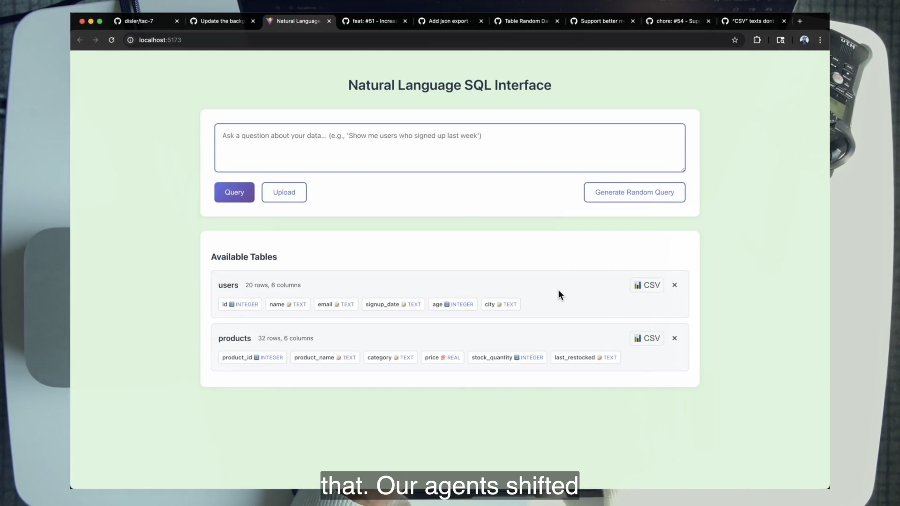
At 34:38 Dan files “Update the background color” with /chore adw_sdlc_ZTE_iso. The uppercase token is intentional. At 35:31 the issue receives the six-phase initiation comment and automatic-merge warning. Plan, build, unit test, review, and documentation execute on the base model set. At 44:16 review screenshots report that the background is green. Ship validates the run and merges.
At 48:31 Dan reports that the issue is closed and the change is deployed. At 49:14 he pulls origin/main and shows the application. His summary is the presence calculation: all he did was write the prompt. The committed repository preserves a different real ZTE chore—background to light-sky-blue #E0F6FF and “Upload Data” shortened to “Upload”—so the snapshot proves the same class without pretending to contain issue #62.
4 · Name it — production in this lesson
One-prompt-to-production-shaped flow
Do not claim that the course performs a universal deployment. It demonstrates the final repository transition and the place where an organization would attach deploy checks. Precision strengthens the lesson: ZTE is about removing a human transition from a system whose actual destination and controls you define.
5 · Worked example — calculate presence for the demo
What counts as a touch?
Dan writes issue #62: touch one. The layer classifies, creates the environment, plans, builds, tests, reviews, documents, ships, comments, and closes without asking him for a decision. He later observes and teaches the result, but no production approval or repair is introduced. For the operational run, presence is one.
Contrast the earlier drag-and-drop feature. Dan writes the issue, then later runs /in_loop_review and personally exercises it. That run is not ZTE, and his return is not hidden. The two stories establish the counting rule better than a slogan.
6 · You try — run the uppercase/lowercase pair
Prove both authority and restraint
- In a course clone whose GitHub repository you control, file the uppercase background-color chore from the lab.
- Capture the initiation warning and phase outcomes.
- After completion, pull main and inspect
git log --oneline -3for the ship merge message. - Serve main and verify the requested color.
- File the lowercase
adw_sdlc_zte_isovariant and capture its downgrade to reviewed SDLC.
Pass only with proof of both behaviors. An auto-merge without the interlock experiment demonstrates authority but not your understanding of the safety boundary.
7 · Common fail + fix
Failure: dismissing the demo because the change is cosmetic
Symptom: you argue that a background color says nothing about difficult engineering, so you learn nothing from the run.
Fix: grade the actual hypothesis. The demo tests whether an issue can traverse routing, isolation, planning, implementation, tests, review evidence, documentation, state validation, and merge with presence one. It does not prove that schema migrations or novel features belong at ZTE. Small scope isolates the workflow experiment.
8 · Current practice overlay
Connect ship to the deployment system you really have
9 · Retrieval check
1. What exactly was Dan’s single touch for issue #62?
Reveal answer
Writing the issue prompt with the uppercase ZTE route.
2. What does “production” concretely mean in the course repo?
Reveal answer
Main branch after the ship workflow merges and pushes. Dan says an organization should connect that step to its real staging/production delivery path.
3. Why is the background-color size a feature of the experiment?
Reveal answer
It creates a low-stakes bounded chore class on which to test the complete transition system and presence-one behavior before attempting riskier classes.
10 · Teach-back prompt
Narrate issue #62 as a state machine, not a success story. Name the input, route, six phases, abort points, evidence, Git transition, visible result, and why the operational presence is one.
Pass if the listener can distinguish observation after the fact from an approval touch during the run.
The secret: the SDLC was only one composition
Seven lessons appeared to teach plan → build → test → review → document → deploy. The payoff is realizing that these are arrangements of reusable primitives, not a sacred pipeline.
1 · Hook — concrete failure
The pipeline becomes dogma
You build one reliable SDLC workflow and send every request through it. A one-word label change receives planning, full tests, browser review, documentation, and deployment ceremony. A review-only audit receives an implementation phase it does not need. A documentation task is forced to pretend it is a feature. Reliability has hardened into rigidity.
Dan’s secret is not that the SDLC fails. It is that the SDLC is one useful sentence written with a smaller vocabulary. Mastery means owning the vocabulary well enough to write a different sentence for each engineering problem class.
2 · Picture — atoms, steps, compositions
Any workflow sits to the right of reusable primitives
- ADWs
- templates
- plans
- architecture
- tests
- documentation
- types
- stdout
- tools
- prompt
- model
- context
- plan
- build
- test
- review
- document
- deploy
- plan → build → test
- build → review → deploy
- test → document
- any workflow
3 · Story of one move — inspect the 14 scripts
The repository has been teaching composition all along
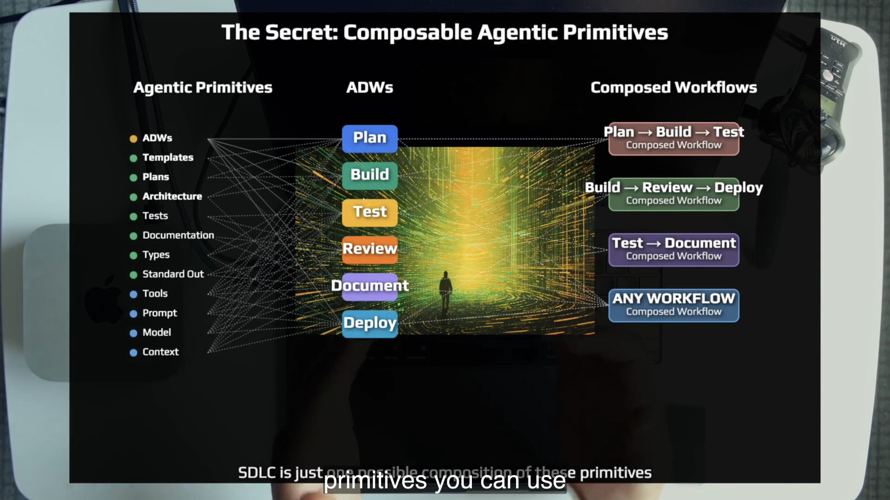
The adws/ directory contains 14 workflow scripts: individual phase workflows plus compositions such as plan/build, plan/build/test, plan/build/review, plan/build/document, plan/build/test/review, full SDLC, SDLC+ZTE ship, patch, and ship. They reuse the same modules for state, GitHub, agents, Git, worktrees, and reporting.
The CSV-text bug in the opening demo takes adw_patch_iso. The features take adw_sdlc_iso. Both use isolated environments and the same underlying agentic layer. At 45:58 Dan states the secret twice: tactical agentic coding is not about the software developer lifecycle; it is about composable agentic primitives that can solve any engineering problem class. The SDLC remains relevant, but its arrangement is arbitrary rather than universal.
4 · Name it — the course thesis
Composable agentic primitives
A primitive is useful below the level of a complete workflow: a prompt template, plan artifact, tool boundary, model choice, context packet, test contract, stdout protocol, or state transition. An ADW step packages primitives for one purpose. A composed workflow orders steps and decides which outcomes gate the next transition.
5 · Worked example — derive patch and ZTE from the same vocabulary
Two compositions, one layer
Patch composition
One narrow change
Environment
worktree + portsPatch plan
specs/patchImplement
focused agentPR
human-visible resultZTE composition
Full evidence + ship
Plan/build
stateful phasesTest/review
abort + proofDocument
nonblockingShip
validate + mergeCalling patch “a smaller SDLC” hides the design insight. It is a different selection and order of primitives for a different problem class. The exact composition that ships in your codebase is the one that matters.
6 · You try — compose before you code
Design three workflows from the course primitives
On paper, compose a workflow for each: a documentation-only update, a flaky-test diagnosis, and a low-risk UI copy patch. For every composition, name the input, isolated environment requirement, state fields consumed, agent purpose, verification, evidence surface, and terminal action. You may use only primitives and files already present in the tac-7 course codebase; this is design, not an invitation to add new machinery.
Pass if the three graphs differ and every omitted phase has a reason.
7 · Common fail + fix
Failure: hearing “SDLC is a remnant” as “delete the SDLC”
Symptom: you replace one dogma with another, dismantling a working pipeline because the lesson says its arrangement is arbitrary.
Fix: retain compositions that fit their classes. Demote them from universal truth to named tools. A fixed workflow is valuable when it reliably solves a recurring shape. The failure is not having an SDLC; it is lacking the primitives and judgment to choose anything else.
8 · Current practice overlay
Committed command prompts evolve into Skills
9 · Retrieval check
1. State the secret in one sentence.
Reveal answer
Tactical agentic coding is about composable agentic primitives for any engineering problem class; the SDLC is one possible arrangement.
2. Name four primitives from the course slide.
Reveal answer
Any four of ADWs, templates, plans, architecture, tests, documentation, types, stdout, tools, prompt, model, and context.
3. Why is patch not merely “small SDLC”?
Reveal answer
It selects and orders a different subset of primitives for a narrow problem class, omitting phases whose ceremony would not add value.
10 · Teach-back prompt
Resolve the apparent rug-pull. Explain why seven SDLC-centered lessons were still useful if the SDLC was never the point. Use primitives → steps → compositions and compare patch with ZTE.
Pass if the SDLC remains useful but loses its monopoly.
Choose a posture: run, stand still, move, or sprint
The technical pieces are copyable. Dan closes by arguing that the limiting factor is whether you believe the agentic layer deserves sustained investment—and whether that belief produces one concrete experiment.
1 · Hook — concrete failure
Motivation that changes no workflow
You finish the lesson energized, repeat that agentic engineering is the future, and return to a queue where every AI-assisted task still requires continuous prompting and manual transition. Nothing in the system records state, captures proof, or reduces presence. The belief section becomes entertainment rather than a design decision.
Dan’s challenge is sharper: if you do not believe agents can run your codebase, you are “cooked.” He is not asking for blind faith in a model. He is asking whether you believe the layer is worth building so models and tools have a reliable environment in which to act.
2 · Picture — four postures toward the future
Direction and speed are choices
Preserve the old operating model and avoid the layer.
Consume tools and commentary without changing the system.
Instrument one class and improve its workflow.
Build the layer, learn quickly, and expand only as evidence earns it.
3 · Story of one move — compare two engineers
One builds the layer; one waits inside every task
Agentic-layer engineer
Invests in prompts, environments, state, loops, and proof; then lets a proven class travel from one prompt toward production.
Transition-bound engineer
Opens the ticket, prompts, waits, iterates, retests, reviews, and carries every transition for every unit.
From 38:55 to 40:40, Dan contrasts two futures. One engineer spends weeks investing in an agentic layer, then writes a prompt and lets a proven class flow toward production, with the no-issue rate rising as tools and models improve. The other opens Jira, prompts in-loop, sits, waits, iterates, and retests. Dan asks who wins and who makes the business more money.
The comparison is about compounding. Better models improve the engineer who built reliable context, tools, prompts, environments, and feedback loops without requiring the whole operating system to be rediscovered. At 41:35 Dan says the goal is not to be right about every forecast but to be prepared to win. Preparation is encoded capability.
4 · Name it — belief as investment thesis
Belief in the agentic layer
Belief is falsifiable here. You invest in one workflow, record presence and failures, and see whether the layer pays a dividend. The opposite of belief is not caution; it is refusing to build the experimental surface on which confidence could become evidence.
5 · Worked example — the first week after the course
One chore class, one ledger, one decision
Choose a course-code chore such as bounded UI copy. Define its route and proof. Run it reviewed three times in the course environment. Record attempts, findings, and presence. If review adds no value and the pipeline gates behave as designed, run one uppercase-ZTE experiment. Inspect the evidence afterward and decide whether the next same-class run stays ZTE, returns out-loop, or needs a stronger check.
This example remains within the course codebase as required. Its purpose is to turn the closing speech into a repeatable method: invest, instrument, decide, improve.
6 · You try — write the next irreversible-looking step reversibly
A seven-day agentic-layer bet
Complete this sentence: “For the next seven days, I will target lower presence for ___ in tac-7 by adding or exercising ___; I will keep human review until ___; the experiment fails if ___.” Keep the scope small enough that failure teaches rather than harms. Name the artifact—test, screenshot, state check, or KPI—that will decide the next move.
Pass if the bet can end in “return to out-loop” without embarrassment.
7 · Common fail + fix
Failure: substituting conviction for controls
Symptom: “I believe agents can run the codebase” becomes permission to skip tests, evidence, or class boundaries.
Fix: belief funds the layer; it does not waive the layer. Sprinting means building faster feedback and stronger composition, not expanding authority faster than evidence. The engineer prepared to win can state both the North Star and the next abort condition.
8 · Current practice overlay
The tool curve rewards prepared codebases
9 · Retrieval check
1. Name the four postures.
Reveal answer
Run away, stand still, move toward, and sprint.
2. What does “prepared to win” mean operationally?
Reveal answer
Build reusable context, prompts, tools, isolation, state, loops, evidence, and compositions so new model/tool improvements multiply through a working layer.
3. What is the one concrete ask after the motivation?
Reveal answer
Choose a bounded problem class, encode and instrument its workflow, run an experiment, and let evidence determine whether presence can fall.
10 · Teach-back prompt
Give the chapter’s closing argument without futurism. Compare the two engineers in terms of repeated transitions and compounding infrastructure, then propose one seven-day, course-code experiment with a metric and abort condition.
Pass if your listener leaves with an action rather than a slogan.
Graded capstone · earn one zero-touch chore
This 2–3 hour lab uses only the TAC-7 course codebase. You will run a reviewed SDLC, deliberately step back in-loop, prove selective heavy compute, compare patch with SDLC, execute one uppercase-ZTE chore, verify the lowercase interlock, read the KPIs, and clean every environment.
Lab 0 · Establish the course environment and evidence surfaces
Failure this exposes: launching an auto-merge workflow before you know which repository it controls, what the app’s healthy state looks like, or where run evidence lands.
- Clone and enter the course repository:
git clone https://github.com/disler/tac-7.git cd tac-7 - Create an empty GitHub repository you control. Repoint this course clone and push main:
git remote remove origin git remote add origin <your-repository-url> git push -u origin mainVerify
git remote -v. Do not proceed until every push destination is yours. - Copy
.env.sampleto.env. ConfigureANTHROPIC_API_KEY, exportGITHUB_REPO_URL, and configure the NL-to-SQL application’s key inapp/server/.env. Cloudflare R2 variables are optional; without them, review returns local screenshot paths. - Verify tools:
claude --version gh auth status uv --version bun --version git --version - Boot the course app, upload sample data, run one natural-language query, and stop it:
./scripts/start.sh # inspect http://localhost:5173 ./scripts/stop_apps.sh - Read
.claude/settings.jsonandadws/README.md. Then locate the source files the chapter audits:adws/adw_sdlc_zte_iso.py,adws/adw_ship_iso.py,adws/adw_modules/state.py,adws/adw_modules/worktree_ops.py, andadws/adw_modules/agent.py.
Checkpoint 0 · say the three evidence locations. Run state/logs live under
agents/<adw_id>/; the isolated application lives under trees/<adw_id>/; human-facing reports, screenshots/paths, and PR links land on GitHub.Pass criteria
- The remote points only to a repository you control.
- All required tools respond and GitHub authentication is healthy.
- The application works before agent changes.
- You can name the three evidence surfaces and why ship requires your own repository.
Lab 1 · One issue becomes a production-shaped reviewed run
Issue: Add a footer showing the current table count. adw_sdlc_iso
- Create the issue in your repository and record its number. Run the orchestrator manually first:
cd adws uv run adw_sdlc_iso.py <issue-number> - When the ADW ID appears, open a second terminal and enter the clone’s
adws/directory. Inspect isolation without editing:git worktree list cat ../trees/<adw_id>/.ports.env cat ../agents/<adw_id>/adw_state.json - Name all ten state fields aloud. Mark which eight the ship workflow requires.
- Open
trees/<adw_id>in an editor only to observe the branch and live run. You are a guest in the agent’s environment. Do not alter files. - After completion, audit the issue thread in order: classification, state/plan, test report, review summary with at least one screenshot or local path, documentation, and PR. Open the PR diff.
- Record presence honestly. For this reviewed run, the intended best case is prompt + review = 2.
Checkpoint 1 · trace the baton. Point to where issue number, branch name, plan path, class, worktree, ports, model set, and workflow history entered state. Explain how a fresh review agent found the correct environment without receiving the planner’s transcript.
Pass criteria
- The issue thread forms a complete paper trail through PR.
- Worktree, branch, and ports are visible and unique.
- All ten state fields are explained accurately.
- Review includes at least one proof image or expected local path.
- No application code was hand-edited.
Lab 1B · Prove two ADWs are isolated while concurrent
Failure this exposes: calling the environment “parallel-ready” after observing only one worktree at a time.
- Create two independent, low-risk chore issues in the course clone. To limit compute, you may use two concurrent
adw_plan_iso.pyruns; the isolation proof does not require two additional full SDLCs. - Launch the two issue-number runs in separate terminals before either completes.
- While both are live, capture
git worktree list, bothtrees/<adw_id>/.ports.envfiles, and bothagents/<adw_id>/adw_state.jsonpaths. - Compare four ownership dimensions: worktree path, branch name, backend/frontend port pair, and state directory. All must be disjoint.
- Record one sentence explaining why one agent can reset or serve its application without changing the other agent’s environment.
Checkpoint 1B · four-part proof. Two simultaneous ADWs have different worktrees, branches, port pairs, and state locations. Terminal count alone is not evidence.
Pass criteria
- Both ADWs overlap in time.
- Evidence captures two registered worktrees.
- Branch, ports, and state are disjoint.
- The four-part isolation explanation is correct.
Lab 2 · Step back in-loop on purpose
Failure this exposes: treating the velocity scale as a one-way identity instead of a reversible operating choice.
- In an interactive Claude Code session, run:
/in_loop_review <branch-name> - Let the command fetch and check out the branch, prepare the app, and open localhost. Exercise the footer yourself.
- Write one sentence: “My in-loop review caught ___.” If it caught nothing, write “nothing” rather than inventing value.
- Add this touch to your presence ledger and state whether the run moved from out-loop into in-loop during training.
Checkpoint 2 · explain the gradient. “I chose to add a human touch because ___; it did/did not change the outcome; repeated evidence of no added value would justify ___ for this class.”
Pass criteria
- You exercised the real feature in the browser.
- Your finding sentence is honest and specific.
- You can explain why moving backward on the scale can be correct.
Lab 3 · Turn the compute knob and prove selection
Issue: Generate random rows for a selected table. adw_sdlc_iso model_set heavy
- Create and run the issue using the same reviewed SDLC path.
- Confirm
"model_set": "heavy"in its state file. - Inspect
agents/<adw_id>/sdlc_implementor/raw_output.jsonlfor the model field, or use the issue’s “Model Set” report. - Collect evidence that implementation used the heavy-map value while classification, test, and review stayed on the base-map value in this course source.
- Read
SLASH_COMMAND_MODEL_MAPand independently count the eight entries whose base and heavy values differ.
Checkpoint 3 · one policy sentence. “Heavy selects a per-command policy stored in state; it does not assign one heavy model to every phase.”
Pass criteria
- State proves the heavy set was selected.
- Run evidence proves implementation escalated.
- At least one structural phase is proven to remain base.
- You can name all eight escalating commands or derive them from source.
Lab 4 · Compare patch composition with full SDLC
Issue: Rename the Query button to Run. adw_patch_iso
- Create the issue and run the patch workflow.
- Find its plan beneath
specs/patch/. - List the phases that ran: isolated worktree, targeted patch planning, implementation, and PR.
- List the full-SDLC phases that did not run: the full plan/test/review/document ceremony.
- Compare run duration, artifacts, and presence with Lab 1 without claiming that shorter automatically means better.
Checkpoint 4 · secret in miniature. Explain why patch is a different composition of shared primitives for “change one thing,” not merely a deficient SDLC.
Pass criteria
- The targeted patch plan and PR exist.
- You identify included and omitted phases correctly.
- You can defend the routing choice by problem class.
Lab 5 · Exercise the ZTE ceremony and uppercase interlock
Uppercase issue: /chore adw_sdlc_ZTE_iso - change the background color to light green
- Before launching, write the class boundary, required proof, abort conditions, and predicted presence.
- Create the uppercase issue. In an interactive Claude Code session, run
/classify_adwwith the raw issue text and confirm that the returned route is ZTE. Then launch the returned course orchestrator manually:cd adws uv run adw_sdlc_zte_iso.py <issue-number>Capture the six-phase initiation comment and automatic-merge warning. The script filename is lowercase; the safety interlock applies to the issue token interpreted by
/classify_adw. - Watch the phase status without intervening. If test or review fails, count the run as an honest abort; do not bypass the gate to manufacture a pass.
- After success, update your local main and inspect the transition:
git pull git log --oneline -3Look for a merge commit whose message includes
via ADW Ship workflow. - Serve main and verify the requested light-green background.
- Create a second issue using lowercase
adw_sdlc_zte_iso. Run/classify_adwwith that raw text and capture its reviewedadw_sdlc_isoroute. If you continue the second run manually, launchuv run adw_sdlc_iso.py <issue-number>; do not bypass classification by calling the ZTE script. Do not call the downgrade a bug. - Read
adw_sdlc_zte_iso.pyand prove--skip-e2eis always appended. Record clearly that browser E2E did not gate this ZTE run.
Checkpoint 5 · count before you trust. Recite: explicit uppercase route → test pass → review pass → eight complete state fields → three-way worktree validation → fetch/checkout/pull/
merge --no-ff/push with branch restoration attempts.Pass criteria
- One uppercase run auto-merges with no human approval touch, or an honest gate abort is diagnosed and rerun without bypassing.
- The merge commit and visible main-branch change are proven.
- The lowercase run visibly downgrades.
- You disclose that browser E2E was skipped.
- Your presence ledger is honest.
Lab 6 · Read the KPIs, close the loop, and reclaim disk
- Open
app_docs/agentic_kpis.md. For each run, compare its row with issue class, plan, diff, and presence ledger. - For one state file, count
all_adwsentries by hand and compare with attempts. Recompute the current streak using your completed rows. - Write which problem class you would trust for the next ZTE experiment and which class you would keep reviewed.
- Return to the repository root and purge every worktree:
./scripts/purge_tree.sh <adw_id> git worktree listRepeat for every run. Do not finish with stale course worktrees.
Checkpoint 6 · evidence-based decision. Your class choice must cite attempts, review findings, streak, and presence—not general confidence in agents.
Pass criteria
- KPI arithmetic matches the run records you inspected.
- Presence is recorded for Labs 1, 3, 4, and 5.
- The next-class decision cites evidence.
git worktree listcontains no stale lab worktrees.
Stretch drills · deepen the source audit
S2 · Port-collision drill
Occupy a deterministic course port with python3 -m http.server 9107 before launching a run whose initial pair uses that index. Find where find_next_available_ports selects the next free pair. Stop the temporary server when complete.
S3 · Break ship’s state gate
Run adw_plan_iso only, then call adw_ship_iso <issue> <adw_id>. Capture the abort and list the exact missing fields. The goal is to prove the merge cannot start from a merely existing state file.
S4 · Documentation-versus-source audit
Compare the README’s “squash” description with manual_merge_to_main. Write three sentences explaining the real --no-ff path and the git log evidence that distinguishes the strategies.
S5 · Latent cleanup bug
Find the shutil.rmtree fallback in worktree_ops.remove_worktree and confirm that shutil is not imported. Explain the exact failure path and why it does not invalidate the three-way pre-phase validator.
S6 · E2E honesty check
After proving both SDLC orchestrators hardcode --skip-e2e, run the standalone test workflow without the flag:
cd adws
uv run adw_test_iso.py <issue-number> <adw-id>Playwright MCP must be configured. Compare this evidence with the earlier unit-test-only gate.
S7 · Extend proof toward video
Read playwright-mcp-config.json, confirm 1920×1080 recording into ./videos, locate a review video beneath the worktree, and post the path or an uploaded URL to your issue. Do not invent a URL when only a local path exists.
S8 · Wire a real trigger
Run uv run adw_triggers/trigger_webhook.py on port 8001 and scripts/expose_webhook.sh, then configure Issues and Issue-comment events for your repository. File a course-code issue from another device and remain out-loop. The cron alternative polls every 20 seconds via trigger_cron.py.
Stretch pass criteria
- S2 demonstrates availability fallback.
- S3 aborts before Git and names missing fields.
- S4 states
--no-ffaccurately. - S5 identifies the missing import without changing course application code.
- S6 distinguishes unit from browser E2E evidence.
- S7 preserves the real video path/URL.
- S8 demonstrates issue-triggered execution in a repository you control.
Troubleshooting · preserve the learning signal
| Observation | Likely explanation | Repair or interpretation |
|---|---|---|
| Dependent workflow demands an ADW ID | Review/document/ship need prior state | Copy the ID from planning output; do not start a disconnected run. |
| Review posts file paths instead of images | R2 variables are absent | Use local paths as expected evidence or configure all four R2 values. |
| Lowercase ZTE does not merge | The uppercase interlock worked | Read the classification output; use explicit ZTE only for the authorized lab step. |
| Ship says fields are missing | An upstream phase did not populate complete state | Read the named fields and trace the responsible phase. Do not hand-edit state to bypass. |
| ZTE tests pass but browser behavior fails | SDLC always skipped browser E2E | Run standalone adw_test_iso.py without --skip-e2e; improve the class contract. |
| Cleanup fallback throws a name error | shutil is unimported in source | Use the purge script/Git cleanup path and record the source defect; do not hide stale worktrees. |
| Costs rise during heavy/full runs | This is the course’s highest-compute capstone | Stop at your precommitted budget and preserve partial evidence; budget failure is not a ZTE correctness result. |
Final pass sheet · grade from artifacts
Operational evidence
- □ Zero lines of application code typed by hand.
- □ One reviewed
adw_sdlc_isorun from issue through PR and screenshot/path proof. - □ All ten state fields explained; ship’s eight-field subset identified.
- □ One deliberate in-loop review with an honest finding.
- □ One heavy run proving selective implementation escalation.
- □ One patch run contrasted with full SDLC.
- □ One uppercase-ZTE chore merged to main, or an honest gate abort diagnosed and then passed without bypass.
- □ One lowercase
zteissue visibly downgraded. - □ Browser E2E omission disclosed; standalone path understood.
- □ Presence ledger and KPI arithmetic complete.
- □ Two concurrent runs proven disjoint across worktrees, branches, ports, and state.
- □ Every worktree purged.
Oral mastery · no notes
- □ In-loop → out-loop → ZTE with presence shape.
- □ PITER → PITE and what replaces human review.
- □ Ten state fields, eight ship fields, three worktree checks.
- □ Eighteen model-map commands, eight heavy escalations.
- □ Three review severities and the blocking one.
- □ Exact Git ship order and
--no-ffcorrection. - □ The secret: composable primitives, SDLC as one arrangement.
- □ One evidence-backed class you would target next.
Cumulative mastery · retrieve, trace, decide, compose
Close the chapter. Answer aloud or on paper. Then reveal. Mastery means you can predict source behavior, distinguish the video from the snapshot, and choose a workflow shape—not merely recognize the vocabulary.
Round 1 · Velocity and presence
1. Give the three velocity levels and the human-presence pattern at each.
Reveal answer
In-loop has continuous human presence; out-loop’s best case is two touches, prompt and review/merge; ZTE targets one touch, the prompt.
2. Why is the scale a gradient rather than a switch?
Reveal answer
Movement is per problem class, based on evidence, and reversible. Dan himself returns in-loop for hands-on review at 22:59.
3. What does “Target” prevent?
Reveal answer
It prevents interpreting ZTE as a global day-one auto-merge policy. It is a North Star pursued chores → bugs → features as each class earns trust.
4. What exactly changes from PITER to PITE?
Reveal answer
The human R/review touchpoint drops. Evaluation remains embedded in tests, agentic review, proof, resolution, state validation, and ship gates.
Round 2 · Trace one ADW
1. A new issue triggers an isolated run. Name the four resources that must be unique.
Reveal answer
Worktree/path, Git branch, backend/frontend port pair, and state/log directory keyed by ADW ID.
2. List all ten state fields and identify ship’s eight.
Reveal answer
Ten: ADW ID, issue number, branch name, plan file, issue class, worktree path, backend port, frontend port, model set, and all ADWs. Ship requires the first eight; model set and all ADWs are not in its completeness set.
3. How are the first ports derived, and what happens on collision?
Reveal answer
The first eight alphanumeric ID characters are interpreted base 36, modulo 15, mapping to 9100–9114 and 9200–9214. Both ports are socket-checked; the function advances through the 15 pairs until one is free.
4. Why does state belong outside the context window?
Reveal answer
It lets fresh, single-purpose agents coordinate and replay phases without sharing a giant transcript or making the human carry pipeline memory.
Round 3 · Compute and evidence
1. What does model_set heavy actually select?
Reveal answer
The heavy column of an 18-command policy map. Eight commands escalate in the course source; ten stay on the base model.
2. How do testing and review ask different questions?
Reveal answer
Testing evaluates executable contracts and whether code works. Review compares the built result with what was requested and produces proof of value.
3. Which review severity blocks, and why not block all findings?
Reveal answer
Only blocker. Treating skippable or tech-debt observations as release failures makes review cry wolf and prevents useful autonomous progress.
4. What proves that a human review may be a bottleneck?
Reveal answer
A class-level history where attempts stay low, streak rises, evidence remains correct, blockers are absent, and human reviews repeatedly add no findings while presence remains two.
Round 4 · Predict the ZTE source
1. A learner types lowercase adw_sdlc_zte_iso. What happens?
Reveal answer
/classify_adw refuses the dangerous ZTE route and downgrades to reviewed adw_sdlc_iso.
2. Tests pass, review passes, documentation fails. Does ship run?
Reveal answer
Yes. The orchestrator warns that documentation failed but explicitly continues to shipping.
3. State is complete, but the worktree directory was deleted. Does merge begin?
Reveal answer
No. Three-way worktree validation fails because the filesystem path does not exist.
4. Give the real Git order and merge strategy.
Reveal answer
Save original branch; fetch origin; checkout main; pull origin/main; merge the feature branch with --no-ff and the ADW ship message; push origin/main; restore the original branch. Failure paths attempt restoration.
5. What important test did the ZTE orchestrator not run?
Reveal answer
Browser E2E. It always passes --skip-e2e; standalone adw_test_iso.py without the flag is required.
Round 5 · Compose and teach
1. State the secret and explain why it does not invalidate the course.
Reveal answer
The subject is composable agentic primitives for any engineering problem class; the SDLC is one arrangement. The course used the SDLC as a package for teaching the primitives and their interactions.
2. Compose a narrow patch from available steps.
Reveal answer
Issue/trigger → isolated worktree and state → targeted patch plan → focused implementation → PR. The exact course patch path omits full test/review/document ceremony.
3. Name the three 2026 plumbing shifts overlaid in this chapter.
Reveal answer
Hand-rolled worktree fan-out toward first-class isolated tasks; claude -p subprocess orchestration toward Agent SDKs; command Markdown/conditional docs toward Agent Skills.
4. What is your next bounded experiment?
Reveal answer
A passing answer names one course-code problem class, its route, required evidence, current and target presence, and an abort/reversal condition.
The highest-leverage result is not one autonomous change. It is a codebase with primitives you can keep recomposing as models, tools, and problem classes change.
TAC-7 glossary
Use these spellings when teaching or debugging. The chapter preserves the course’s intentional ZTE naming duality and separates runtime demo values from committed evidence.
- ADW
- AI Developer Workflow: the scripting-layer workflow that chains focused agents and engineering phases for a problem class.
- Agentic Engineering Velocity Scale
- In-Loop → Out-Loop → ZTE, a per-class gradient in required human presence.
- ADW state object
agents/<adw_id>/adw_state.json, the ten-field per-run pipeline memory and part of the ship gate.- all_adws
- The state list of workflow identifiers that have run; used by KPI tracking to reason about attempts.
- Composable agentic primitives
- Reusable ADWs, templates, plans, architecture, tests, docs, types, stdout, tools, prompts, models, and context from which workflows are built.
- Evidence surface
- The place a claim can be checked: agent logs/state, isolated worktree, issue comments/screenshots, PR, test output, or Git history.
- IDK
- Information-dense keyword whose committed interpretation expands into a larger instruction or policy, such as
model_set heavy. - In-Loop
- Velocity level with continuous human steering, inspection, or transition work.
- Isolated ADW /
_iso - A workflow running in its own course worktree with dedicated branch, ports, and state.
- Model set
- A named base/heavy per-command compute-allocation map stored in ADW state.
- Out-Loop
- Velocity level where the human prompts, leaves, and returns to review/merge; best-case presence two.
- PITER → PITE
- Prompt input, Trigger, Environment, Review becomes Prompt input, Trigger, Environment as the human review touch drops.
- Presence
- KPI counting human touchpoints per shipped unit; ZTE targets one.
- Proof of value
- Review evidence answering “Is what we built what we asked for?” In TAC-7 this includes numbered screenshots posted to the issue.
- Streak
- Consecutive successful run count used with presence, attempts, and size to judge per-class readiness.
- Target Zero-Touch Engineering
- Tactic #7: the North Star of reducing human presence from two to one for a proven problem class.
- Zero Touch Execution
- The expansion used by the course code and bot messages for the ZTE workflow that appends ship to the full SDLC.
- Worktree validation
- The three-way check that state names a path, the directory exists, and Git registers the worktree.